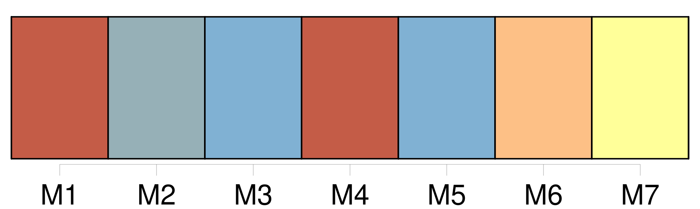
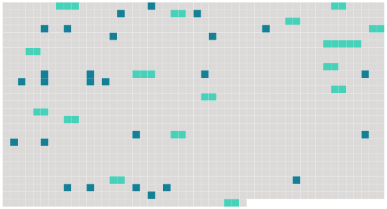

Longueur nb maillons : 42 mentions |
 |
Depuis deux heures de l'après-midi, [leur jeune bonne] étant devenue folle se réfugiait sur le toit et [refusait] de descendre. Déjà les Maréchaud, épouvantés par le scandale, avaient clos leurs volets, si bien que le tragique de [cette folle] sur un toit s'augmentait de ce que la maison parût abandonnée. Des gens criaient, s'indignaient que [ses] maîtres ne fissent rien pour sauver [cette malheureuse] [Elle] titubait sur les tuiles, sans, d'ailleurs, avoir l'air d'une ivrogne. [2 phrases]
Je partis la mort dans l'âme, et priant Dieu que [la bonne] fût encore sur le toit, lorsque j'irais chercher mon père à la gare. [Elle] était à [son] poste, mais les rares passants revenaient de Paris, se dépêchaient pour rentrer dîner, et ne pas manquer le bal.
Ils ne [lui] accordaient qu'une minute distraite. Du reste, jusqu'ici, pour [la bonne] , il ne s'agissait encore que de répétition plus ou moins publique. [Elle] devait débuter le soir, selon l'usage, les girandoles lumineuses [lui] formant une véritable rampe. [1 phrases]
Au fantastique de cette maison du crime, sur le toit de laquelle se promenait, comme sur un pont de navire pavoisé, [une femme aux cheveux flottants] , contribuait beaucoup la voix de [cette femme] : inhumaine, gutturale, d'une douceur qui donnait la chair de poule. [5 phrases] C'était l'épouse d'un conseiller municipal, adversaire de Maréchaud, et qui, depuis quelques minutes, s'apitoyait bruyamment sur [la folle] Elle fit des recommandations au capitaine : « Essayez de [la] prendre par la douceur ; [elle] en est tellement privée, [la pauvre petite] , dans cette maison où on [la] bat. Surtout, si c'est la crainte d'être renvoyée, de se trouver sans place, qui [la] fait agir, dites [-lui] que je [la] prendrai chez moi. Je [lui] doublerai [ses] gages. [4 phrases]
Mais à peine l'un d'eux apparut -il sur le toit, que la foule, comme les enfants à Guignol, se mit à vociférer, à prévenir [la victime] [2 phrases] À ces cris, [la folle] , s'armant de tuiles, en envoya une sur le casque du pompier parvenu au faîte. [2 phrases] [La folle] disait des choses que j'ai oubliées, avec cette profonde mélancolie résignée que donne aux voix la certitude qu'on a raison, que tout le monde se trompe. [1 phrases] Aussi, tremblant que [la folle] fût prise en leur absence, couraient -ils faire vite un tour de chevaux de bois. [4 phrases] Croyant que c'était [elle] qu'on applaudissait, [la folle] saluait, un paquet de tuiles sous chaque bras, car elle en jetait une chaque fois que miroitait un casque. De [sa] voix inhumaine, [elle] remerciait qu'on [l'] eût enfin comprise. [20 phrases] Cent torches éclairaient soudain [la folle] , comme, après la lumière douce des rampes, le magnésium éclate pour photographier une nouvelle étoile. Alors, agitant [ses] mains en signe d'adieu, et croyant à la fin du monde, ou simplement qu'on allait [la] prendre, [elle] se jeta du toit, [brisa] la marquise dans [sa] chute, avec un fracas épouvantable, pour venir s'aplatir sur les marches de pierre. [1 phrases]
Mais quand j'entendis des gens crier : « [Elle] vit encore », je tombai, sans connaissance, des épaules de mon père. [2 phrases] Au retour, je crus voir derrière la grille une silhouette blanche, le fantôme de [la bonne] !! |
 |
Il est possible de télécharger la ressource sur la page Ortolang |
Si vous avez des questions ou vous voyez des erreurs, merci d'envoyer un mail à silvia.federzoni89@gmail.com |